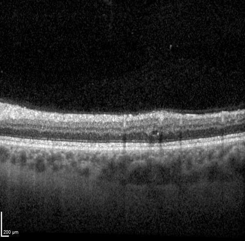

Define the limit
You define the mistake and the maximum error rate you can accept among unchecked findings.
OCT finding review

Illustrative research imageProposes whether fluid is present or absent.
Applies a policy calibrated on previously reviewed findings.
Clinician reviews the final report.
A statistical limit on wrong AI findings among those allowed to skip checking.
You define the mistake and the maximum error rate you can accept among unchecked findings.
Reviewed OCT findings set its checking policy for your error limit. If the evidence cannot support it, all checks stay.
For each new AI finding, the module either permits skipping the extra check or keeps it. It does not need to know whether that individual finding is correct.